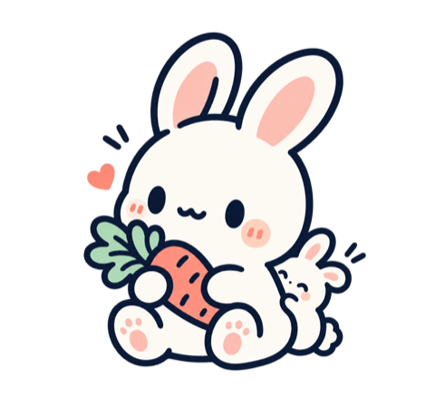
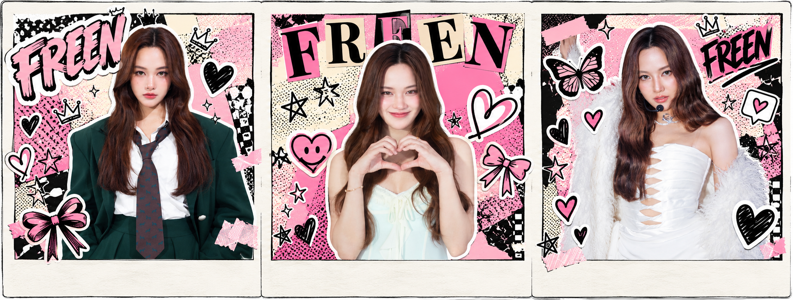
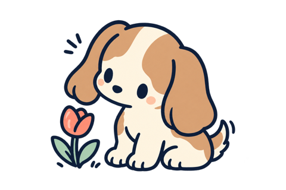

A FAN PAGE MADE WITH LOVE
FREEN
A little corner of love dedicated to Freen Sarocha Chankimha.
WATCH VIDEO
all the love ♡
01
Video
♡ FEATURED ♡
02
Community ♡
Share a favorite event memory with the fan community.
Approved moments
♡ COMMUNITYLoading approved posts…
03
Favorite Links ♡
YouTubeVideos & clips↗
InstagramPhotos & updates ♡↗
TikTokShort Videos↗
SpotifyPlay music while you explore the page